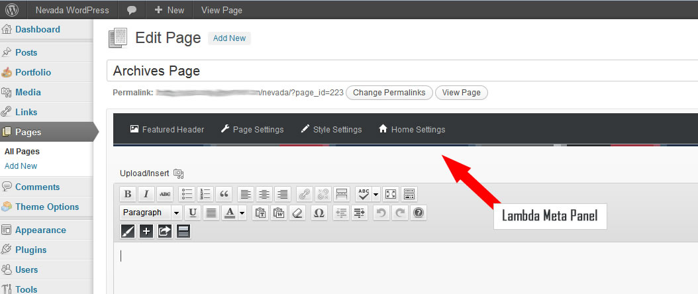

Thank you for purchasing our theme. We're as excited as you are about the possibilities before you. Finally, its going to be far less complicated to make your Wordpress website pages look and feel the way you want them to with our new drag and drop page builder. We built this theme for everyone. It is perfect for newcomers to creating a Wordpress site. Code is only poetry to people who know what it all means. To everyone else it is a strange and very foreign language. We get that and built everybody's requests right into the front end options and page builder. For all our seasoned Wordpress pros, we know how frustrating it can be trying to finish a client's project. We think you're about to discover you can go from start to finish faster than ever and produce a smashing looking site in far less time than you ever thought possible. IMPORTANT NOTE Be sure to refer to the information outlined in the following documentation for the Nevada theme while building your new site. We have explained much of what you need to know to create great looking pages easily using the features built into the theme with you in mind. If you cannot locate the answer here, sign up for our support forum. We do not answer support questions on Theme Forest.
Before you attempt to upload your Nevada theme you must unzip the downloaded folder. Why? The extra files it contains can cause strange issues to occur in your theme's functionality. Only upload the inner zip folder and only install your theme through the Wordpress admin installer located under Appearance > Themes > Install.
If this way to install the theme fails, we recommend to use FTP.
Open your FTP client and move to your WordPress installation path. Drag&Drop the "nevada" folder into the following path:
Now go to your Dashboard -> Appearance -> Theme and activate the theme
Before you go racing off to build a site the way you did last time - stop. We know you're anxious, but following the right path will always make it quicker, easier and far less frustrating.
The basic styling and setup section for your new Nevada theme is located in these tabs. Individual page customizations are located on the editor of the pages themselves. Don't worry about them until you have the basic site layout looking like you want it to.
The Theme Option Panel is divided into the following sections:
General
Here you can upload your custom logo, favicon, Apple touch logo, as well as add your Google Analytics code.
Uploading your logo is super simple. Click Upload, select the file in your computer and when its done doing it's thing ... Click Save. Make sure you hit the URL Button while inserting your Logo.
You can also brand the login page by uploading a logo in the box below the site logo.
Depending on the width of your logo - you might need to adjust the margin between it and your menu links in the header. You'll know when you have seen how the logo and navigation look together on your website.
Styling
Now that you've installed the theme, there are a few things you need to do that will create the framework for actually getting into the building of your new Nevada powered Wordpress site.
It doesn't matter if you're going to use the theme as a blog only or a website, you will need to create pages. As a blogger, you no doubt want pages like About Us and Contact. The difference is that posts populate a page with excerpts and a page is a static entity that doesn't update automatically when you add a new post to your blog. Portfolios work much like the blog but use special post types and their own unique post categories.
To create a regular website with Wordpress, you will need lots more pages than that. Whether you have a plan together or not, lets create some of your basic pages like About, Portfolio, Services, Our Team and Contact.
Go to the Pages section on the left sidebar of your admin and click Add New. Give your new pages a title name and save them. You can go back to actually laying out the pages after your basic setup is done. You can also add more pages later, change the page name you chose and do so very easily.
Wordpress will automatically create a menu of your pages for you, but the Custom Menus function gives you total control of what appears in the menu, where it appears and also the menu title. This might seem a little confusing at first, but its a great thing. Many times the page title you want to use will take up half the width of your header where the navigation menu appears. Custom menu allows you to shorten or totally change the name that appears in the navigation.
So let's set you the pages you've just created in custom menus.
Go to Appearance > Menu. First, create a menu name in the big top box on the right. Use something like Top Menu or Main Menu and save it. Next go to the top box named Theme Locations on the left and click the down arrow where you'll see the menu name you just created. Select that name and click the Save button here too.
Now add your new pages to the menu. Find the box a little farther down named Pages and check all the page names you want in your navigation menu. Click the Add To Menu button and they magically appear in the main menu builder box at the top. Drag them around with your mouse to get them in the order you want to. To make one page become a drop down from another you've created pull it to the right and it will indent.
Save your menu changes at the bottom of the big top box and go see what your new menu looks like on the site.
Note that you can add categories from both the blog and the portfolio to your menu in the same way. If you don't see them in their own box like you do Pages its a cinch to make them accessible. Look at the top right corner of your dashboard and you'll see a Screen Options tab. Click it and find Categories or Portfolio - check the box in front of it in options and it will be added to the options on your menu admin area to work from too.
Besides we have added a chance to create a secondary menu only for your mobile version of your theme, this option can be very nifty when you want to cut down large scale menus in order to make the mobile version more clearly.
If you want the blog to be the home page on your site, Wordpress automatically does that for you.
If you want the home page to be a static page, you need to change some things in the Wordpress settings. Here you want to go to Settings at the bottom of your admin sidebar. Hover you mouse and you'll see Reading is an option. Click on it. On the top is a choice of Your Latest Posts and Static Page. Select Static Page and find the page you want to be Home and select it. Save your changes and your home page will now look like you expected it to look.
NOTE: If you see two Home links in your navigation menu on your site its because you forgot to do one of the following:
One of the most powerful tools we developed for our WordPress themes. Whenever you need a special and individual customization for your pages , posts and portfolio like an individual slider, background, sidebar or post format / portfolio settings this is definitely the right place to start. Also each template we implemented on Nevada can be handled and configured using this panel!
For example, when choosing the "Home Template" a new tab named "Home Settings" appears above the edito. Inside this tab you can configure this template.

Creating individual pages is a simple thing with Nevada. Using page templates, shortcodes and the drag & drop page builder in the Meta Panel settings you can make your pages do just about anything... without ever touching the code!
In Nevada you can elect to use a basically fill in the blanks outline for your Home Page, Team Page, FAQ Page and Testimonials Page simply by selecting these templates from the dropdown list on any page editor.
Other choices here include:
Acitve Page Creator: Explained in detail below.
Archive: This page displays an overview that includes your Latest 30 Posts, readers' voted favorite posts under Top 10 Likes. your post Subjects or types and also the posts archived by the month.
Dynamic Contact: Your Contact page made simple.
Portfolio: Explained in detail in Portfolio.
Template Client: Easily show your Client Pool
Template Home: Create your Home Site in few steps!
Template Service: Show your services embedded in vertical tabs
Template FAQ: Create your own FAQ within Minutes!
Template Testimonials: Got happy Customers? Present it with the use of this template.
Each Template can be configured using the corresponding tab above the editor.
Please note, you can use each template as often as you like. The template name only describes its layout and not its affiliation.
You're going to love this. Not only is it way cool, it makes laying out every page on your new site so simple! Nevada changes everything. It's your site your way without jumping through hoops or messing with code to customize things to fit your vision.
Activate the “Active Page Creator” by just changing the template to “Active Page Creator”
You can create as many boxes as you need and quickly create the column width desired using simple buttons!
Click the blue Add New Box button. It will appear as a default 1/4 column size.
First: Name your box. This isn't a title - its to help you manage your website. Name it what you need it to be.
Second: Choose a box type. What do you want this section of the page to do for you? It's totally up to you. This is YOUR website design.
All these boxes are drag and drop. You can move them around if you decide the order is wrong. Just click and hold down in any part of the button besides the active areas in the four corners and pull the box where you want it to be.
Text Box with Editor: This should look really familiar. It gives you the basic functions and controls found in the standard wordpress text editor. The extra row of buttons allow you to use some great Nevada functions to make this area of the page really special.
Most of the other boxes don't really need explanation. You've got a whole set of website design tools at your fingertips here that you should investigate. That's how really cool design happens you know. Checking out new things is where inspiration comes from. If you keep doing what you've always done - you'll get the same results you've always seen. Live dangerously for once and see what you can do with them :)
Unless you have already told Wordpress what page your posts will appear on in your website, you need to do so or you will be wondering why they are not showing up.
You have a variety of post types you can create with Nevada. Be sure you select the right post type in the right sidebar to match what you want to create here. If you don't - you'll be wondering why the theme isn't working for you. Always double check the post type selected if the builder is not behaving as expected.
About Featured Image:
A lot of Wordpress themes use the image you embed in the text area as the thumbnail or preview image on the top Blog page excerpts. Others, like Nevada, use the image you set as the Featured Image on top of your post and also as the main blog page preview image - technically known as the thumbnail. You can use this standard post item if you choose rather than the other options found in the Nevada Meta Panel. To set the Feature Image, go to the last box in the bottom of the right sidebar on your post builder page and select Use As Featured Image on your Image Upload editor. Naturally, if you want another image beneath the main image somewhere in your article, this you will want to insert the standard way.
Do not add the main or top image as Featured Image and again in the text editor area. You will have 2 of the same image on your post after clicking Read More to see the single post.
You can use the Standard Post Type, but Nevada gives you so much more choices. Be sure to set the right post format type before you start building your post page. Settings will be different for each of them. You need the right set of panel options to get your page to perform as it was meant to.
Each of the available post formats is shown in example on the Nevada Reloaded demo site. If you're not sure what any of them in the list will give you, revisit the demo blog page to refresh your memory.
Setup your portfolio just the way you like it without editing CSS or PHP! Everything is right at your fingertips on the front end in this part of your Meta Panel.
Portfolio Archive Detail Button: What do you want the button to get to the project details page to say? You can use the default 'Learn More' or change it right here.
Show Portfolio Item Title: The portfolio item title is another one of those things that is a personal preference. You can choose to keep the title that appears on your images or shut it off in this spot.
Portfolio Items per Page: Here you have a different space for each portfolio layout style to set the number of images that will appear on a single portfolio page. Fresh out of the box, every option of 1 to 4 columns is set to the optimum number of images for fast loading pages that are quickly and easily viewed by your visitors. You can increase them here if you prefer to.
Do be sure to choose a number on multiple columns though that gives you full, balanced rows for the best design effect.
Next Text & Previous Text: These last two settings let you edit the works in the links at the bottom of multiple portfolio pages. No matter what you use the portfolio functions of Nevada! for, your links will fit your product or service perfectly.
Unlike themes that give you one slider space and a choice of which slider will occupy it - Nevada lets you put a variety of slider sizes and types anywhere you want one. To keep your sliders manageable, the first thing you need to do to create one is to make it easily identifiable.
You cannot use the Supersized slider anywhere but as a background. When you do use this full page slider on a page or post - you must choose the Boxed Layout as well.
To start building your just created slider - click the blue edit button next to it. The slider manager for this slider will open giving you 2 tabs - one for settings and the other to add your individual slides it will use.
These are all self explanatory settings. Compared to most other wordpress themes, you will find you have a lot more options in controlling the sliders than usual. Awesome customization powers at your fingertips without venturing into the complicated code sheets!
Just click the Add Slide button and give your slide a name. Upload the image right there from your computer. You can choose not to link the slide to a page but to add one, all you have to do is put the page url in the third box on the Add Slide editor box. Put in the slide caption and Save Settings on the tab.
Use the shortcode to make the slider appear where you want it to.
After pressing the "Create New Slider" button you will reach a form where you are asked to enter a Slider Title (used for the Slider overview in this backend) and a Slider Alias (a slug that is used to implement the Slider in your WP later, so keep it simple with no spaces and special chars).
You are also prompted to enter the Sliders Basic Settings, a Slider Title (for you to remember the Slider by) and a Slider Alias (please do not use special characters or spaces here, this defines the shortcode for you to use in your content).
The options in the boxes on the right side (General Settings, Position, Appearance, Navigation, Thumbnails) have helping Tooltips on mouseover so they are not explained here.
The Slider Type can be fixed (not responsive, fix dimensions), responsive (changes depending on the size of its max. sizes given later in relation to the screen size) or fullwidth (always 100% in width of the screen size, but height keeping the aspect ratio).
The Sizes section is needed to fit the slider in all screen sizes needed. The height of the slider will always be calculated to keep the aspect ratio from the max width and height given in the Slider Size line.#
The next step is creating/editing slides. You get there by just clicking on "Edit Slides" in the Slider Form window.
Just press "New Slide" and the native WP Media Upload dialog window will appear. Choose or Upload the slide's background image, choose "Full Size" and then "Insert Into Post" (all like you are used to it in your WP editor). You can always click on the pic to change it.
Use the arrow handles on the right side to change the slides position in the slider (top to bottom = first to last slide to be shown) or delete it with the "Delete" button.
The "Edit Slide" leads you to the next chapter "Slide".
In the "Edit Slide" view you see the heart of our plugin. The drag&drop Caption editor.
But first please note that you have another chance here to change the background image with the "Change Image" button.
To create a Layer (Caption, Image or Video) press the button "Add Layer" or "Add Layer: Image". In case of a text layer a basic layer will be created you can use the "Text" field in the Layer Params to change the caption on it. The "Style" selectbox shows some basic styles (CSS classes) you can use to style the caption (you can always add own CSS classes to this field or edit the existing ones via the "Edit CSS File").
In case of an Image Layer you will see the native WP Media Uploader again. In case of a Video Layer you will prompted to a custom Video selection wizard.
You now can move the Layers around via drag&drop or type in the x and y coordinate in the corresponding fields.
The "Layers Sorting" drag&drop list determines the Layers' z-index. This list specifies the stack order of an element.
An element with greater stack order is always in front of an element with a lower stack order.
From the theme php use ( for developers ):
<?php putRevSlider( id or "alias" ) ?> - Example:
<?php putRevSlider("example1"); ?>
From the widgets panel:
Drag the "Revolution Slider" widget to the desired sidebar
From the post editor:
Insert the shortcode from the sliders table - Example:
[rev_slider example1]
From the "Featured Header" Tab above the post / page editor
Present your pricing tables the easy way! You can easily create a table with up to four columns. This can be easily achieved in 3 steps:
To make it as easy as possible for our user to recognize when an update is available, we have implemented the “Theme Info” Page which can be found inside the submenu of our “Theme Option”. You will find several information’s on this page. All these information’s can help us to help you with issues, so when contacting us at our support forum provide these information’s (except the change log ;-)
Nevada is fully translation ready!
To start the translation we recommend to use the following plugin Codestyling Localization to be installed in your Wordpress.
After activating the plugin go to:
We constantly develop new features and releasing new Updates for this theme. After downloading the latest Version we recommend to push the "rescan" button and fill out the new items.
With Version 1.2 we have added 100% Support for the QTranslation Plugin. Now you can easily manage your languages using this plugin. We recommend to place the "Language Switch Widget" into the "Header Widget Area" so it will appear at the very top of the page.
When using our "Page Creator" or a custom template, we recommend to make use of the QTranslate Quicktags.
http://www.qianqin.de/qtranslate/forum/viewtopic.php?f=3&t=385
A quick example:
[:en]The Lutheran World Federation
[:de]Lutherischer Weltbund
[:fr]Fédération luthérienne mondiale
[:es]Federacíon luterana mundial
If you are experiencing Issues when using the WordPress Theme Installer this here may also help you!
If you need help, please do not hesitate to contact us! To grant best support we set up a support forum at http://support.unitedthemes.com. Channeling all requests at one place keeps and makes it simple, easier and even more effective for every customers to get quick help. All issues, requests and questions can be discussed and answered at one place. Please note, you will only get access to our forums with a valid purchase key!
Each of our themes is a final version when offered for sale to you. If you've got some issues - we gladly help you out.
Please Note! We cannot make radical changes without compensation.
Need Customisations? CLICK HERE